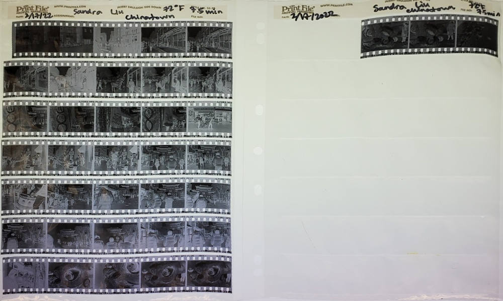
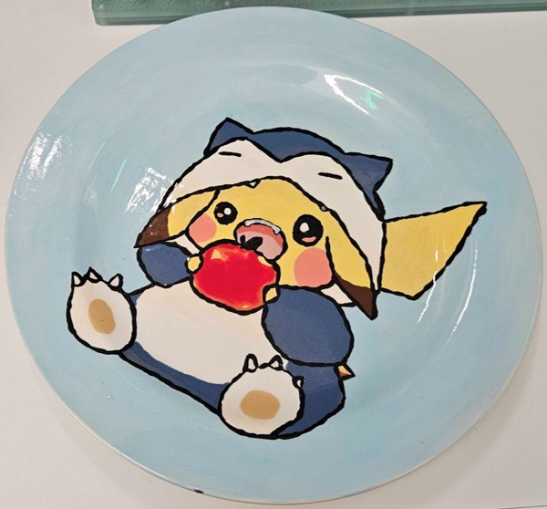
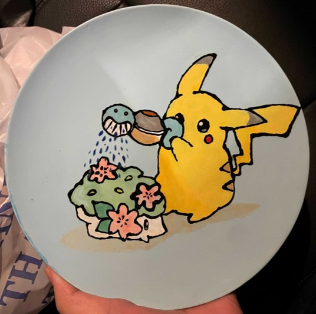

A current work in progress - kirby coasters sketched in CAD and then cut on a laser cutter.


This is one of the first pictures I took when I started getting into photography.
I became strangely obsessed with film photography (i.e. developing it) after taking a photography class at MIT.
There were days where I would spend multiple hours in a row testing and developing my photos.

Below are some of my favorites from my Chinatown lion dancing collection.
A current work in progress - kirby coasters sketched in CAD and then cut on a laser cutter.

A plate I painted for pottery painting, inspired by a picture I found online.

Another pottery painted plate, also inspired by an online picture.
A painting I did for a work-hosted Bob Ross paint night, where the prize was a Bob Ross chia pet!

Faux stained glass piece I made during the pandemic using lead strips and glue.

Thousand layer mooncake I made after attempting to use up leftover red beans to make red bean paste.

Inspired by a friend's large gift of pandan leaves, I made a honeycomb cake.
Braided apple bread - another baking opportunity presented to me by my friend's surplus of apples from his backyard.
Jiucaihe (chive pockets) - a savory Chinese pastry I love making (and eating!!).

The same friend with a surplus of apples also had a surplus of lemons, so we had a day of lemon, complete with lemon meringue pie and severe stomach discomfort...

Matcha, strawberry, and red bean cake - a birthday cake I made for a friend after we went strawberry picking.
A challenge I got from a friend to make a green cake without matcha, pandan, or food coloring. The bottom layer is peas, the middle layer
is kale/apple and the top layer is lemon/cucumber (credits to veggiedesserts.com). We also spent time making cucumber roses. It was surprisingly tasty!
Made from scratch cinnamon rolls to celebrate a friend passing her qualifying exams.

Skiing in Tahoe - fresh powder day! Very different from the ice coast skiing I'm used to...